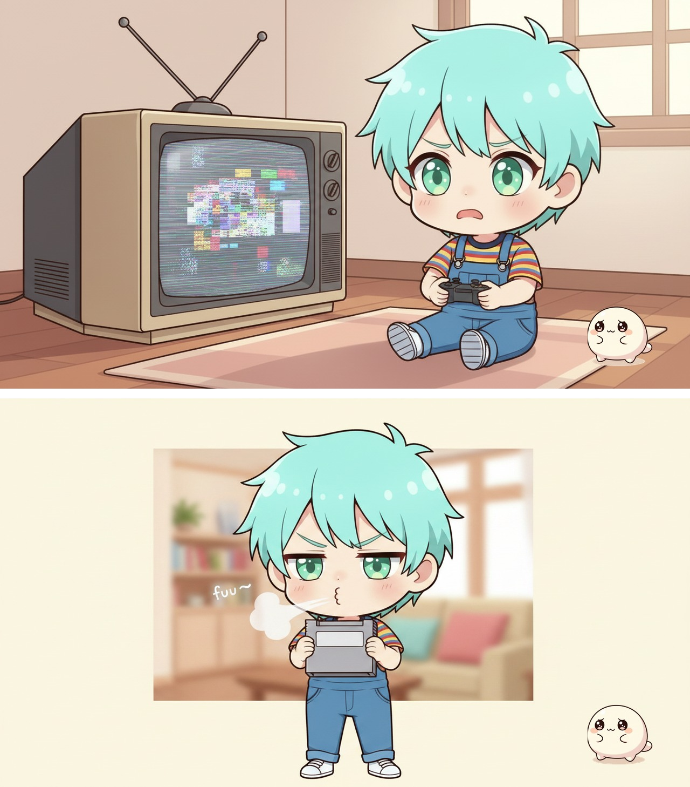
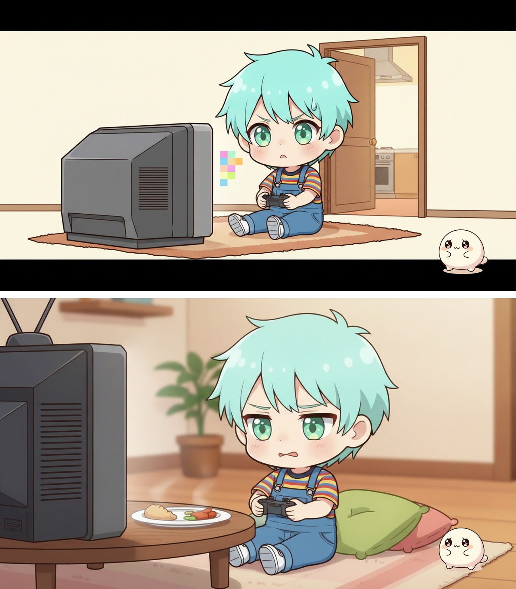
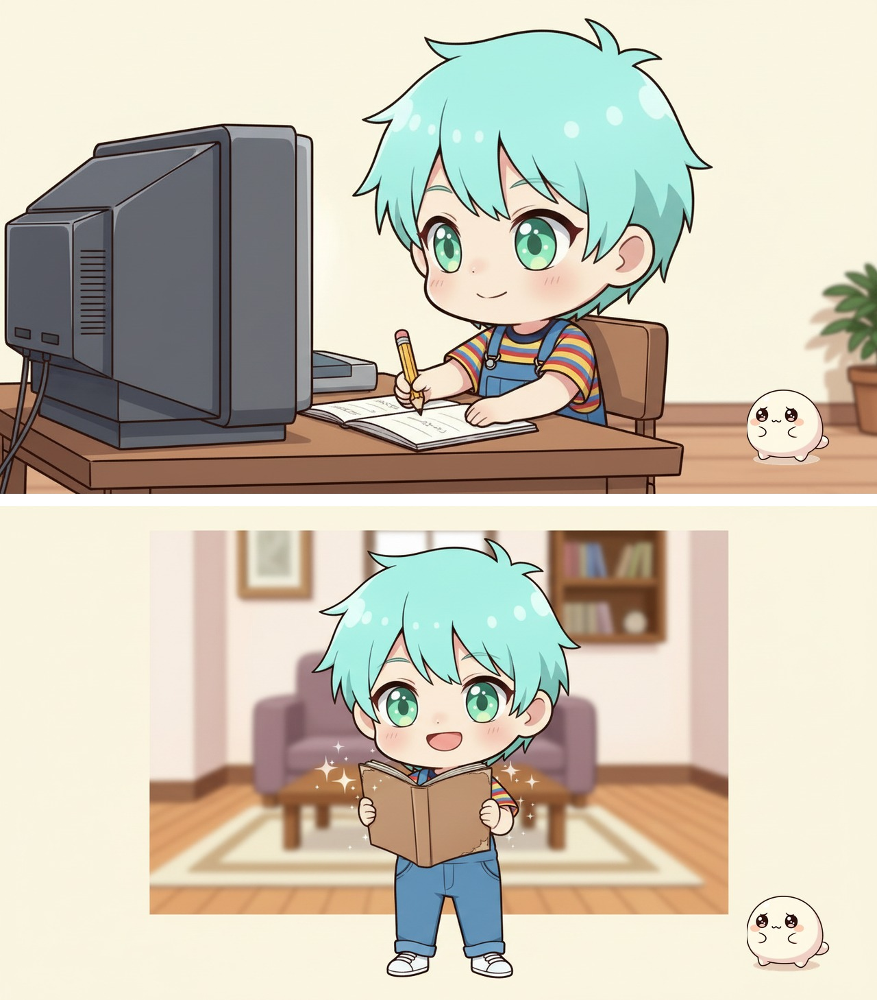
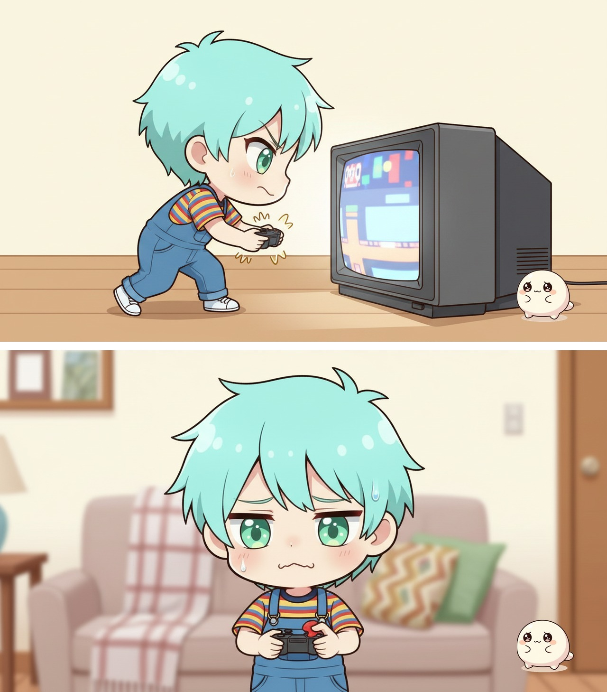
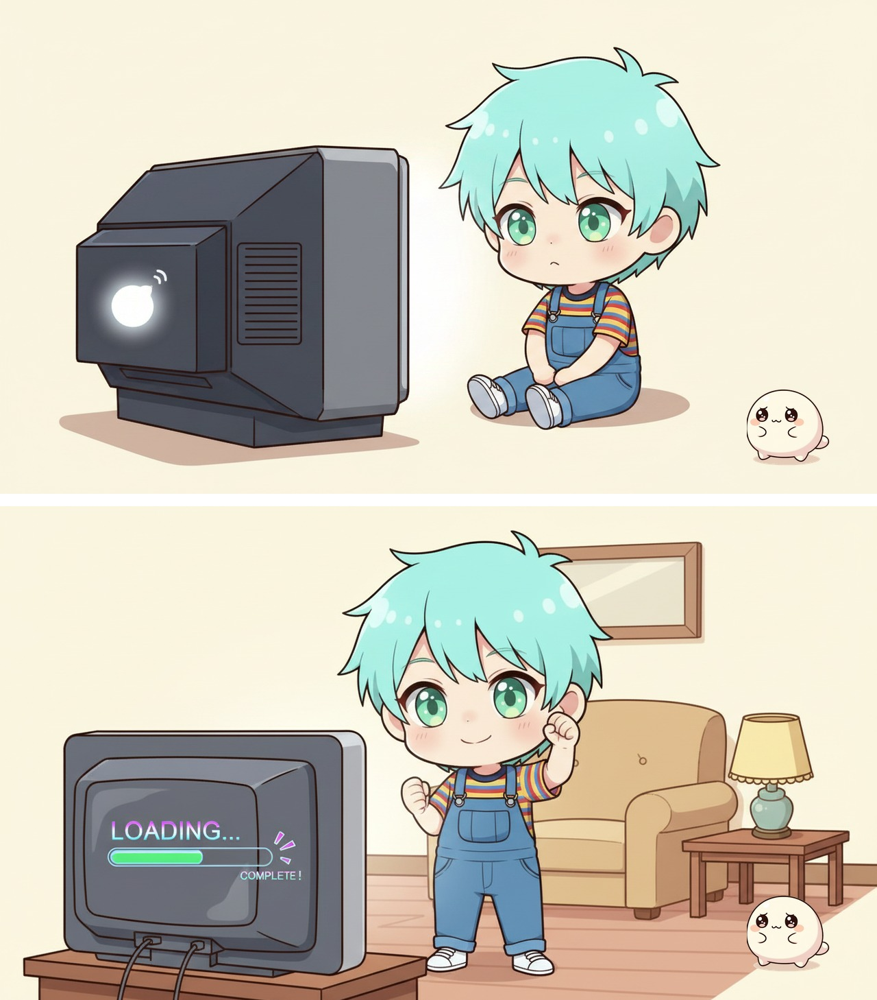

画像を長押し保存 → 「本文をコピー」→ Threadsに貼る
過去ネタも下に残ります（追記式）

ゲームがバグったら、とりあえずカセットをふーっ。 理屈はわからない。でも、なぜか直る。 あの儀式、世界共通だったと思う。 ― あなたも、ふーふーした？ ▶ 各リンク → https://lit.link/nyanshishou #レトロゲームあるある #レト坊 #ふーふー

いいところで「ごはんよー！」。 でもセーブ地点は、まだ遠い…。 中断もできず、ごはんは冷めていく。あの葛藤。 ― 何回、冷ました？ ▶ 各リンク → https://lit.link/nyanshishou #レトロゲームあるある #レト坊 #ごはんよ

攻略情報は貴重品。だからノートに手書きで写す。 そのノートが、いつしか家宝に。 友達と回し読みした、宝物だった。 ― 攻略ノート、作った人いる？ ▶ 各リンク → https://lit.link/nyanshishou #レトロゲームあるある #レト坊 #攻略ノート

強敵にボタン連打、また連打。 気づけばゴムがのびて、押しても効かない。 あのコントローラー、何個ダメにしたんだろう。 ― ボタン、ダメにした人？ ▶ 各リンク → https://lit.link/nyanshishou #レトロゲームあるある #レト坊 #連打

ロードが、とにかく長い。画面をただ、じっと見つめる。 終わるころには、なぜか達成感。 「今の、長かったね」って。 ― ロード、じっと見た人？ ▶ 各リンク → https://lit.link/nyanshishou #レトロゲームあるある #レト坊 #ロード画面